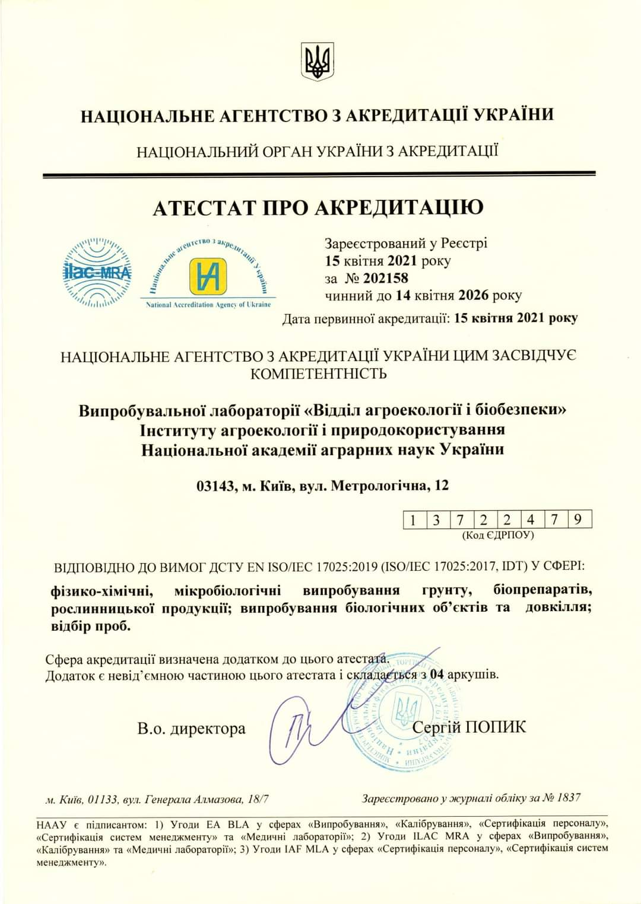

Головна
Випробувальна лабораторія "Відділ агроекології і біобезпеки"
Інституту агроекології і природокористування НААН – це провідна
сучасна лабораторія, яка спрямована на визначення якості та
безпечності сільськогосподарської продукції.
Співробітники ВЛ "ВАБ" займаються науково-практичними розробками в
галузях екології, мікробіології, вірусології, біотехнології,
агрономії.
Випробувальну лабораторію Відділу агроекології і біобезпеки Інституту агроекології і природокористування НААН акредитовано Національним агентством з акредитації України №202158 від 15.04.2021 відповідно до вимог ДСТУ EN ISO/IEC 17025:2019 у сфері фізико-хімічних, мікробіологічних випробувань грунту, біопрепаратів, рослинницької продукції; випробувань біологічних об’єктів та довкілля; відбору проб.

Наказом №295 від 30.04.2021 Міністерство захисту довкілля та природних ресурсів України внесено до переліку науково-дослідних установ, підприємств та організацій уповноважених на проведення державних випробувань пестицидів та агрохімікатів відділ агроекології і біобезпеки Інституту агроекології і природокористування.
Про нас
-
На сьогодні у ВЛ «ВАБ» існує три напрями випробувань:
- Мікробіологічні випробування
- Біологічні та екологічні випробування
- Фізико-хімічні випробування
Особливості випробувальної лабораторії «Відділ агроекології і біобезпеки»:
-
сучасне лабораторне обладнання
-
«акваріумна кімната», де вирощують рибок гупі (Poecilia reticulata), найменші водні ракоподібні дафнії (Daphnia magna), мікроскопічні одноклітинні зелені водорості хлорела (Chlorella vulgaris)
-
власний «міні-віварій», де для потреб досліджень розводять перепелів (Coturnix coturnix japonica) та бджіл (Apis mellifera)
-
дослідні поля в Київській, Одеській, Вінницькій областях
-
теплиця, світлова кімната – рослини вирощують впродовж всього року
Основними напрямками досліджень ВЛ «ВАБ» є:
- Комплексні дослідження природних, напівприродних, заповідних, фітоценозів та агроландшафтів – за показниками фіто- та зоорізноманіття, мікробіоценозом, агрохімічними показниками ґрунту, якістю продукції.
- Державні випробовування пестицидів та агрохімікатів – визначення їх біологічної ефективності та екологічна оцінка (оцінка екологічної небезпечності) на на нецільові об’єкти водної (риби, дафнії), ґрунтової (мікроорганізми, земляні червʼяки) та наземної екосистеми.
- Молекулярно-генетичні дослідження - визначення видового складу мікробіоти, оцінка біорізноманіття та виявлення міжвидових і видових взаємозв’язків у екосистемах на філогенетичному рівні.
- Створення біопрепаратів – технологічні розробки виробництва і застосування мікробіологічних препаратів на основі високо конкурентних мікроорганізмів із агрономічно-корисними властивостями, що дозволять вирішити питання формування сталих агроекосистем з позиції екології та підвищити врожайність сільськогосподарських культур і якість одержаної продукції.
- Консалтингові послуги з питань екології, біобезпеки, агрохімії, мікробіології та вірусології, у агропромисловому виробництві. Проведення виставок, конференцій, круглих столів, семінарів, вебінарів, навчань, лекцій, стажувань.